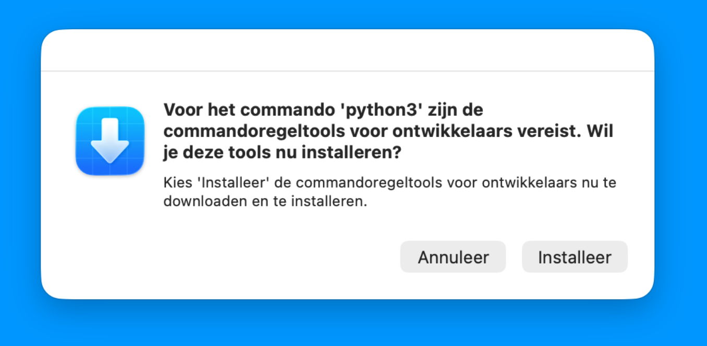

Positron is een geïntegreerde omgeving voor het schrijven van code met veel ingebouwde tools voor data-analyse. Deze handleiding laat je zien hoe je Positron kan installeren.
Voorbereiding
Zorg dat je eerste uv hebt geïnstalleerd. Zie deze handleiding.
Installatie
- Zorg dat je weet wat voor type processor je hebt: een x64-processor (Intel of AMD) of een ARM-processor:
- Open het Windows-menu en type ‘Instellingen’. Klik op Intellingen op druk op Enter.
- Klik op ‘Systeem’ en dan ‘Info’.
- Onder ‘Apparaatspecificaties’ staat ‘Type systeem’. Hier staat of je een x64 or ARM processor hebt.
- Download en installeer ‘Visual C++ Redistributable’:
- Ga naar https://learn.microsoft.com/en-us/cpp/windows/latest-supported-vc-redist?view=msvc-170#latest-supported-redistributable-version
- Klik op de download-link voor de juiste versie (X64 voor x64-processoren, ARM64 voor ARM-processoren).
- Open het gedownloade bestand.
- Vink ‘I agree to the license terms and conditions’ aan en klik ‘Install’.
- Klik na installatie op ‘Restart’.
- Download en installeer ‘Positron’:
- Ga naar https://positron.posit.co/download.html#all-platforms.
- Zoek de downloads voor Windows. Zoek de versie die bij je processor past (x64 of ARM64). Klik op de knop rechts van ‘System install’.
- Open het gedownloadde bestand.
- Vink “I accept the agreement” aan en klik dan op “Next”.
- Klik weer op “Next”, en dan op “Install”.
- Als de installatie klaar is, klik op “Finish”.
- Om Positron op te starten, klik op het Windows-menu en type ‘Positron’. Druk op Enter of klik op de gevonden applicatie.
- Zorg dat je weet wat voor type processor je hebt. MacBooks uitgebracht sinds november 2020 hebben allemaal een Apple Silicon-processor. MacBooks van voor half 2020 hebben allemaal een Intel-processor.
- Klik op het Apple-logo in de menubalk en dan op ‘Over deze Mac’.
- Achter ‘Chip’/‘Processor’ staat ofwel “Apple M…” ofwel “… Intel Core …”.
- Download en installeer ‘Positron’:
- Ga naar https://positron.posit.co/download.html.
- Klik op ‘Download for Apple Silicon’ of ‘Download for Intel’, afhankelijk van het type processor dat je hebt.
- Open het gedownloadde DMG-bestand.
- Er opent een venster met ‘Positron.app’ en ‘Applications’. Klik en sleep Positron bovenop Applications om Positron te installeren. Sluit daarna venster.
- Je kunt Positron nu openen via de Apps launcher, zoeken in Spotlight, of door in Finder naar de map Applicaties.
- Verwijder de schijf ‘Positron…’ die op je bureaublad staat.
- Het kan zijn dat je computer vraagt om commandoregeltools te installeren. Klik op “Annuleer”.
